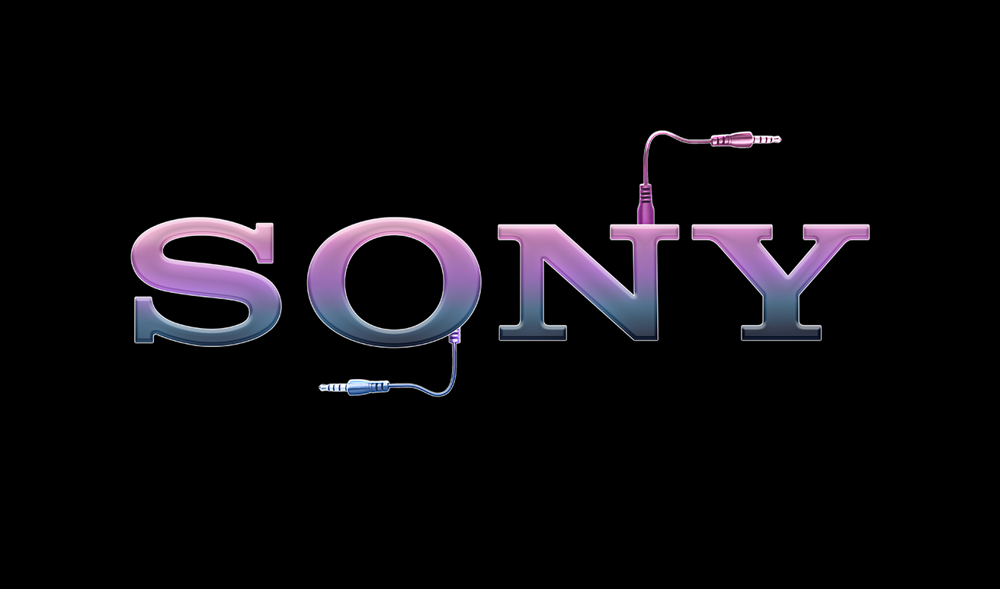
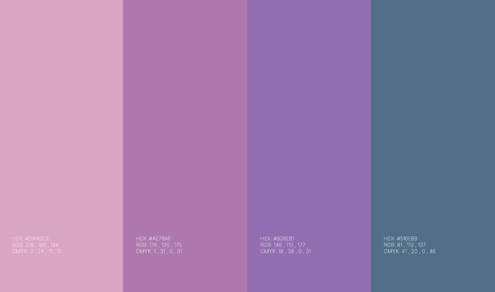
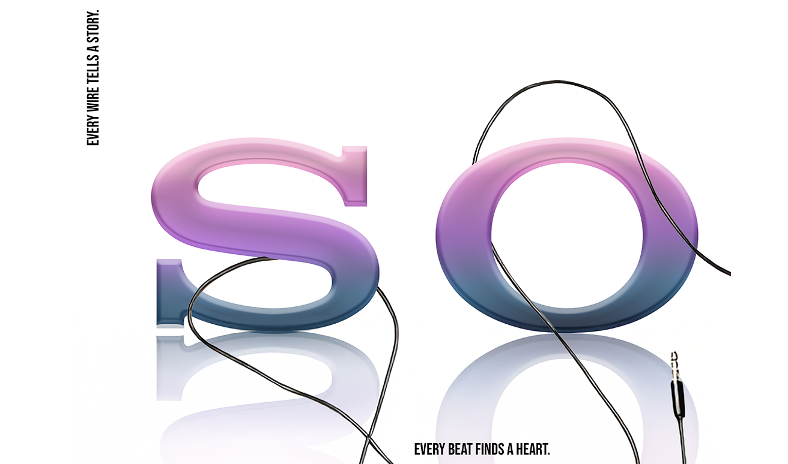
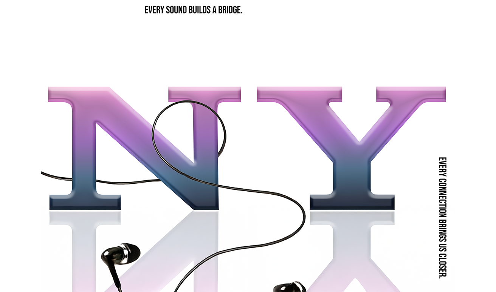
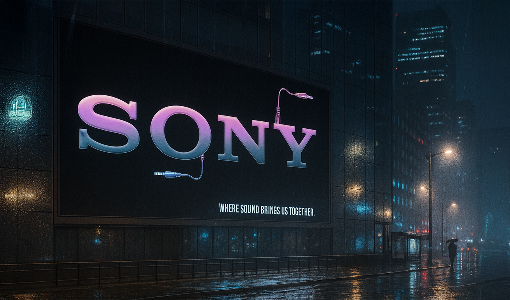
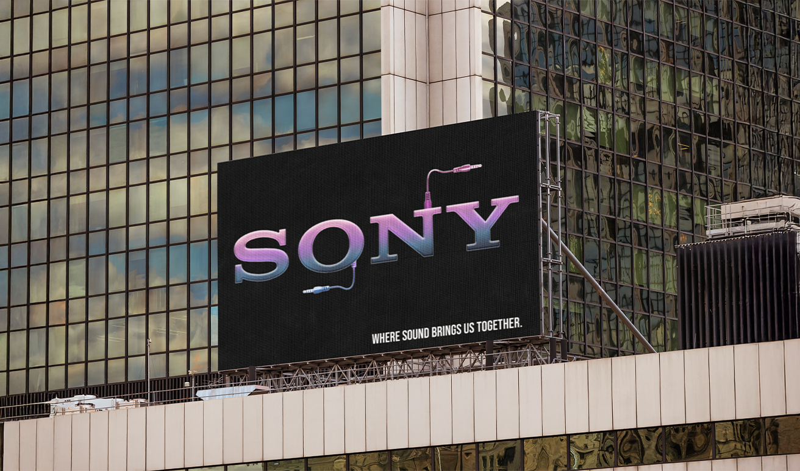
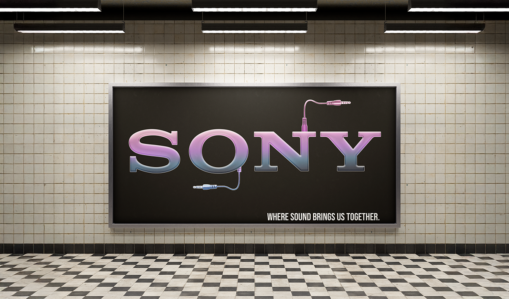
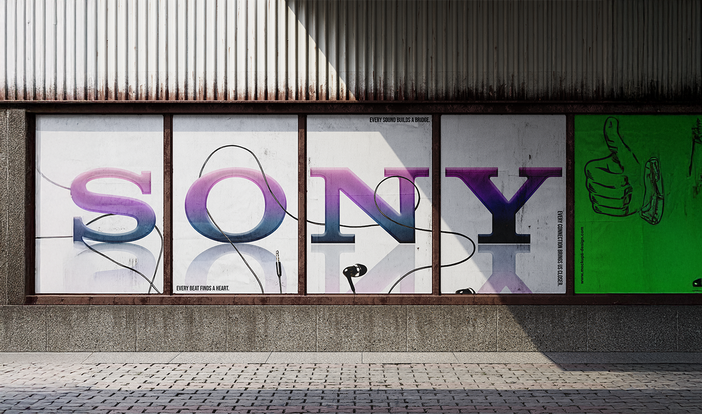
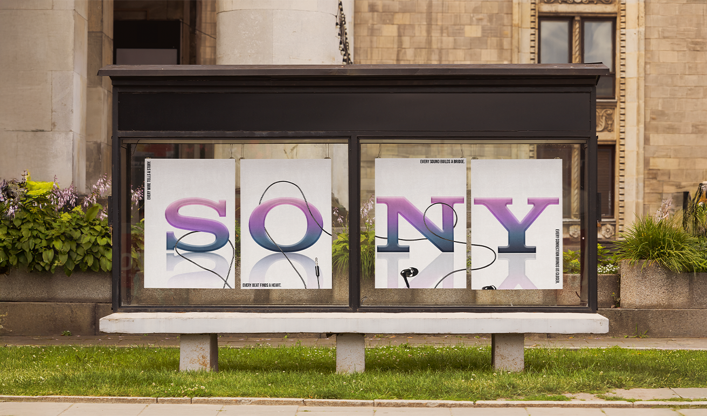
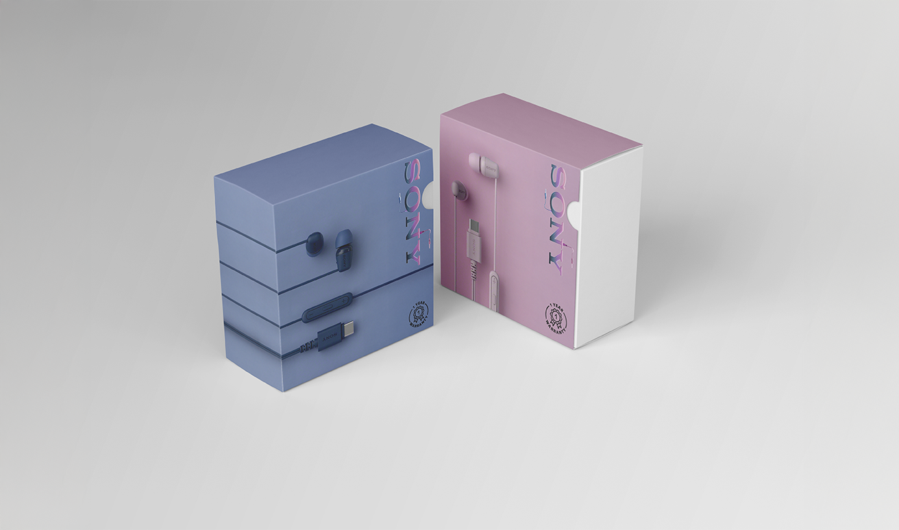

2025
Sony
Where sound brings us together.
- Role
- Graphic Designer
- Duration
- 4 weeks
- Tools
- Adobe Creative Suite
Finding the
connection
Rather than reimagining Sony through technology alone, this project explored the emotional role of sound in everyday life. The concept centres on connection between people, memories and experiences, using music as a universal language that brings individuals together regardless of distance or time.
Designing a
visual language
The visual identity was built around a series of interconnected elements that symbolise movement and human connection. A flowing earphone cable travels between the letterforms while an iridescent pink-to-blue gradient reflects the emotional transitions found within music—from energy and excitement to calm and nostalgia.
- 01Logo
- 02Colour Palette

01
02Telling stories
through type
Rather than treating the Sony wordmark as a static logo, each letter became part of a larger narrative. Cropped compositions, flowing cables and accompanying taglines transform the identity into a dynamic campaign system capable of communicating different stories while remaining instantly recognisable.
- 03SO
- 04NY

03
04Bringing the
campaign to life
The identity extends naturally into public spaces where music is experienced every day. From billboards and subway advertisements to urban installations, the campaign demonstrates how a single visual system can adapt across environments while maintaining a strong emotional presence.
- 05City Billboard at Night
- 06City Billboard at Day
- 07Subway Station Billboard
- 08Posters Streetview
- 09Posters Bus Stop

05
06
07
08
09Beyond the
screen
The visual language continues across product packaging and promotional materials, reinforcing Sony's renewed identity at every touchpoint. Consistent gradients, typography and cable motifs create a cohesive brand experience that bridges digital communication with physical products.
- 10Product Packaging

10Looking back
This project challenged me to think beyond visual aesthetics and design around emotion. By developing a campaign rooted in the idea of connection rather than technology, I explored how colour, typography and composition can communicate abstract concepts while remaining recognisable within an established global brand.